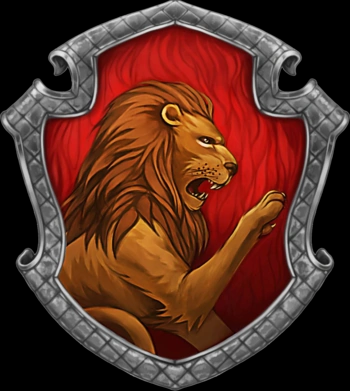
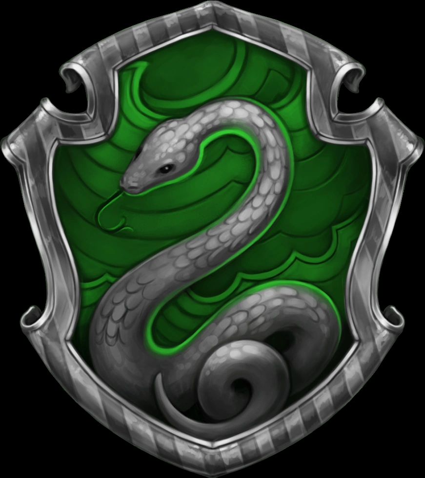
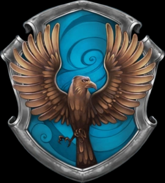
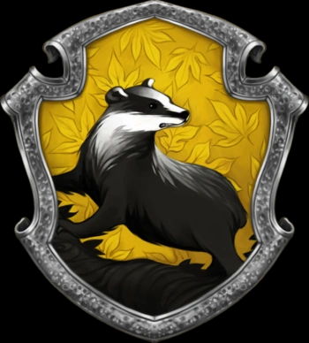
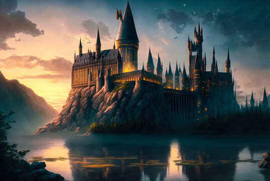
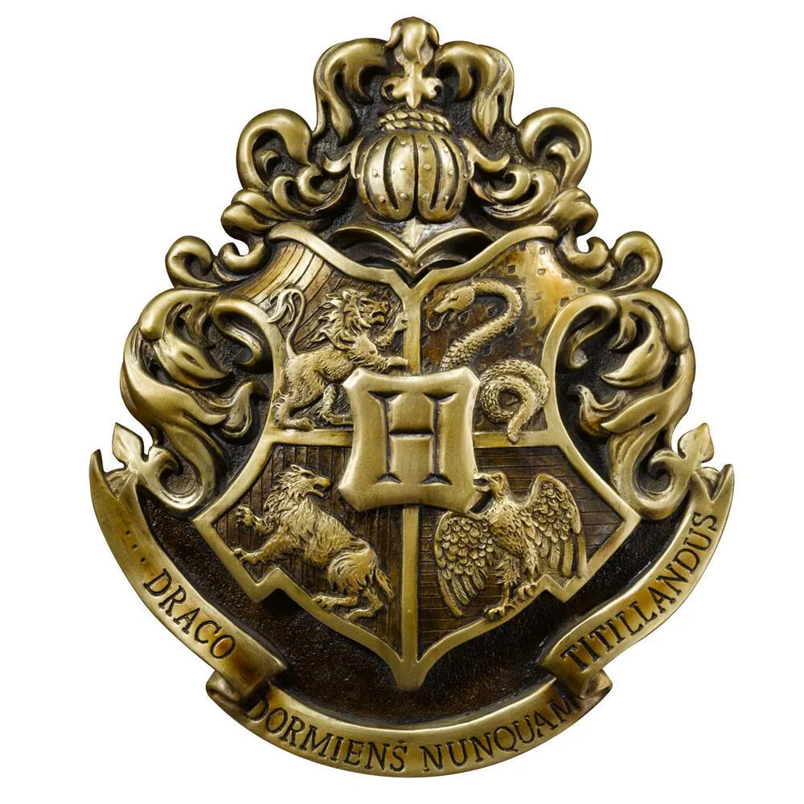

Grifnoria: Casa da coragem, nobreza e bravura.
Seu animal símbolo é o leão,
e as cores da casa são vermelho e dourado.
Os estudantes de Grifinória são
conhecidos por serem valentes, audaciosos e determinados.
Esta casa é famosa
por produzir muitos bruxos e bruxas de destaque, incluindo Harry Potter,
Ron Weasley, Hermione Granger e Alvo Dumbledore.
Sonserina:A casa da astúcia, ambição e determinação. Seu animal símbolo é a cobra,
e as cores da casa são verde e prata. Os estudantes de Sonserina são conhecidos
por serem espertos, ambiciosos e decididos.
No entanto, a casa também tem uma história sombria,
produzindo muitos bruxos e bruxas das trevas, incluindo Lord Voldemort e seus seguidores.


Corvinal: A casa da inteligência, criatividade e sabedoria.
Seu animal símbolo
é a águia, e as cores da casa são azul e bronze. Os estudantes de Corvinal
são
conhecidos por serem muito inteligentes, perspicazes e curiosos.
Muitos dos
personagens mais inteligentes da série, incluindo Luna Lovegood, Cho Chang e
Filius Flitwick, são membros desta casa.
Lufa-lufa: A casa da lealdade, honestidade e paciência. Seu animal símbolo é o texugo,
e as
cores da casa são amarelo e preto. Os estudantes de Lufa-Lufa são conhecidos por serem muito
trabalhadores, justos e dedicados.
Muitos personagens queridos da série, como Cedrico Diggory e
Tonks, são membros desta casa


Além das características gerais de cada casa, cada uma delas tem uma sala comunal específica dentro
do castelo de Hogwarts,
onde os estudantes daquela casa passam a maior parte do tempo. As
salas comuns de cada casa são decoradas com base em seus temas e características,
e geralmente
exigem que os estudantes resolvam um enigma ou respondam a uma pergunta para entrar.
Além disso,
cada casa tem um fantasma que a representa:
Grifinória tem o fantasma de Sir Nicholas de Mimsy-Porpington,
também conhecido como
Nick Quase Sem Cabeça;
Sonserina tem o fantasma de um barão sangrento;
Corvinal tem o fantasma da Dama Cinzenta;
Lufa-Lufa: tem o fantasma do Frei Gorducho.
Os alunos da mesma casa também competem entre si na Taça das Casas, uma competição anual
que premia a casa com mais pontos no final do ano com a Taça das Casas.
